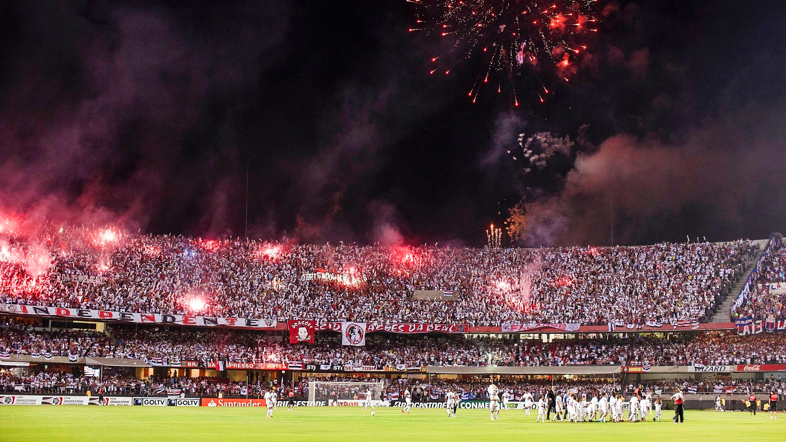

Em um São Paulo e Corinthians na Arena Barueri, válido pela 16ª rodada do Campeonato Paulista de 2011, Rogério Ceni marcou o centésimo gol de sua carreira, o centésimo vestindo a camisa tricolor.
Diante dos argentinos, no Morumbi, o tricolor venceu por 2 a 0 e garantiu a festa dos
mais de 67 mil torcedores que compareceram ao estádio e viram a consagração do meia-atacante
Lucas. O camisa 7 foi o destaque da competição continental.
Morumbi

Morumbi na decisão da Sudamericana de 2012 contra o Tigres


 Libertadores (3x)
Libertadores (3x) Mundial Toyota (2x)
Mundial Toyota (2x) Mundial FIFA (1x)
Mundial FIFA (1x) Sulamericana (1x)
Sulamericana (1x) Paulistão (22x)
Paulistão (22x) Brasileirão (6x)
Brasileirão (6x) Recopa (2x)
Recopa (2x) Master Conmebol(1x)
Master Conmebol(1x) Conmebol(1x)
Conmebol(1x)